文字
背景
行間


SGH活動報告
ＳＧＨ課題研究「途中経過の発表会」（１年生）
平成３０年１１月２０日（火）６・７限に、課題研究に向けたグループ発表会を行いました。
１年生は、研究グループを作ってから、テーマを決め、研究方法等を考え、調査を始めていますが、今日までの過程を整理することを目的として、グループごとに研究について発表を行いました。短時間の発表ですが、スマートフォンを利用したり、グラフや図表等を用いたりする等の工夫をしていました。どのグループも研究目的、先行研究を意識した研究方法を語り、研究の方向を明確に示していました。聞き手の生徒は、疑問点や意見を付箋紙に書いて発表グループに渡しました。発表後はグループごとに付箋紙を整理し、今後の研究の課題を見つけたり、よりよい研究方法を考えたりしました。
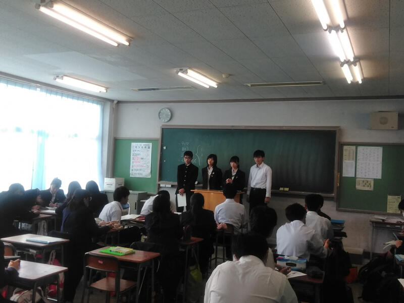
 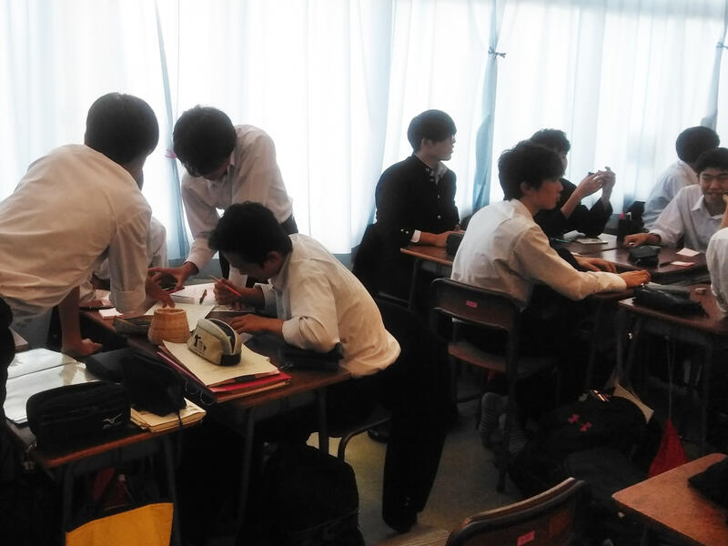
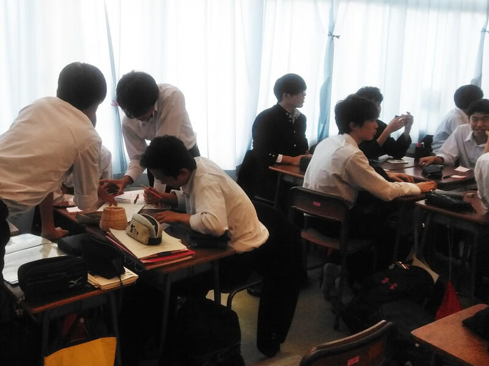
１年生は、研究グループを作ってから、テーマを決め、研究方法等を考え、調査を始めていますが、今日までの過程を整理することを目的として、グループごとに研究について発表を行いました。短時間の発表ですが、スマートフォンを利用したり、グラフや図表等を用いたりする等の工夫をしていました。どのグループも研究目的、先行研究を意識した研究方法を語り、研究の方向を明確に示していました。聞き手の生徒は、疑問点や意見を付箋紙に書いて発表グループに渡しました。発表後はグループごとに付箋紙を整理し、今後の研究の課題を見つけたり、よりよい研究方法を考えたりしました。
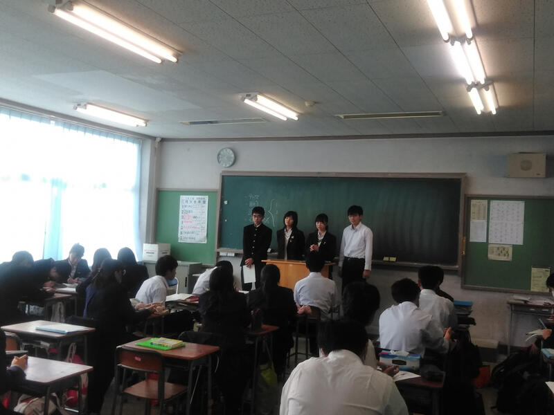
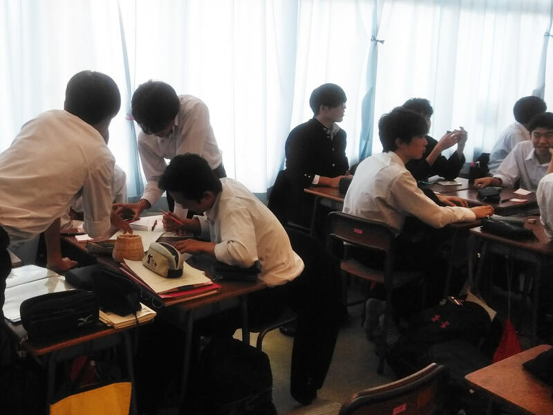 SGH運営指導協議会（第２回）が開かれました。
投稿日時 : 2018/11/20
 sakura-h
sakura-h
平成３０年１１月２０日（火）スパーグローバルハイスクール（SGH）運営指導協議会が開かれました。
ＳＧＨ運営指導協議員の先生方３名と千葉県教育委員会の方２名が来校し、授業（ＧＬ探究）の様子を御覧になりました。その後、地域交流施設で協議会を行い、本校のＳＧＨ事業の進捗状況の報告を行うとともに先生方から御意見・御助言をいただきました。
協議会では、「９月の1分間スピーチと比較すると、今回の生徒の発表は、先行研究を意識している、具体的な計画を持っている、アイデアがある等大きな変化が見られた。」「指定１年目の３月のプレゼンより今日の発表の方がテーマ、目的、方法論がしっかりとできていた。」等の御意見をいただきました。また、「英語宿泊研修参加者と参加していない生徒の比較をするとよいのではないか。」「ＳＳＨとの関係づけをもっと深めるとよい。」等の御助言をいただきました。協議員の先生方ありがとうございました。
今後もＳＧＨ事業の質の向上に努めていきたいと思います。


ＳＧＨ運営指導協議員の先生方３名と千葉県教育委員会の方２名が来校し、授業（ＧＬ探究）の様子を御覧になりました。その後、地域交流施設で協議会を行い、本校のＳＧＨ事業の進捗状況の報告を行うとともに先生方から御意見・御助言をいただきました。
協議会では、「９月の1分間スピーチと比較すると、今回の生徒の発表は、先行研究を意識している、具体的な計画を持っている、アイデアがある等大きな変化が見られた。」「指定１年目の３月のプレゼンより今日の発表の方がテーマ、目的、方法論がしっかりとできていた。」等の御意見をいただきました。また、「英語宿泊研修参加者と参加していない生徒の比較をするとよいのではないか。」「ＳＳＨとの関係づけをもっと深めるとよい。」等の御助言をいただきました。協議員の先生方ありがとうございました。
今後もＳＧＨ事業の質の向上に努めていきたいと思います。
「海外理解促進のための講演会」
2018年11月16日、4･5時間目に1年生全員を対象として「海外理解促進のための講演会」が行われました。
JICAの稲葉健一先生とディレクトフォース授業支援の会の遠藤恭一先生の2名の講師の方をお招きして、それぞれご講演をいただきました。
稲葉先生の「グローバル化と国際教育」のご講演は、ご自身がパラグアイで体験した青年海外協力隊としての活動を中心に、パラグアイでの生活、現地で感じたこと、支援を現地に根付かせるためにはといった内容のお話でした。
遠藤先生の「激変するグローバル化社会で皆さんが考えるべきこと」のご講演では、
遠藤先生の海外での実体験を踏まえながら、大きく変わっていく将来の社会で生活していくために必要な考え方や意識についてお話をいただきました。
生徒からの質疑応答では、「青年海外協力隊に派遣される国に条件はあるのか」、「旧来の伝統や価値観を維持していくことは本当に良いことなのか」といった質問が出ました。


 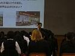
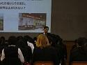
JICAの稲葉健一先生とディレクトフォース授業支援の会の遠藤恭一先生の2名の講師の方をお招きして、それぞれご講演をいただきました。
稲葉先生の「グローバル化と国際教育」のご講演は、ご自身がパラグアイで体験した青年海外協力隊としての活動を中心に、パラグアイでの生活、現地で感じたこと、支援を現地に根付かせるためにはといった内容のお話でした。
遠藤先生の「激変するグローバル化社会で皆さんが考えるべきこと」のご講演では、
遠藤先生の海外での実体験を踏まえながら、大きく変わっていく将来の社会で生活していくために必要な考え方や意識についてお話をいただきました。
生徒からの質疑応答では、「青年海外協力隊に派遣される国に条件はあるのか」、「旧来の伝統や価値観を維持していくことは本当に良いことなのか」といった質問が出ました。
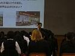 GLアクティブ「筑波大学」
10月29日(月)にGLアクティブ「筑波大学」を実施しました。
本校普通科１年生が39名参加しました。
人文社会学系の毛利 亜紀先生より「東アジアの『逆説』－歴史認識問題の継続－」という題で模擬講義をしていただきました。
午後は中央図書館を見学しました。
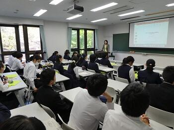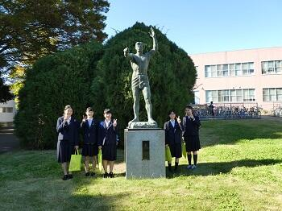
本校普通科１年生が39名参加しました。
人文社会学系の毛利 亜紀先生より「東アジアの『逆説』－歴史認識問題の継続－」という題で模擬講義をしていただきました。
午後は中央図書館を見学しました。
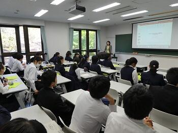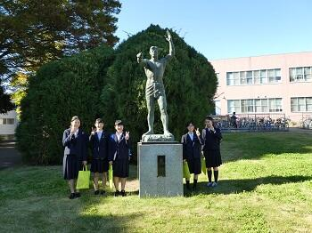
東京大学研究室訪問
平成３０年１０月２９日（月）東京大学の研究室を訪問しました。
本校生徒、２年生８名、１年生７名が参加しました。
プログラム内容
１ 東京大学２年生の国際理解をテーマとしたプレゼンを聴き（すべて英語）、質疑応答（英語と日本語）。
２ 本校生徒３組が課題研究プレゼンを実施。大学生から助言をいただく。
延べ１６名の東大生が協力してくださり、たくさんのアドバイスをいただきました。

GLアクティブ「東京外国語大学」
平成３０年１０月２９日（月）GLアクティブ「東京外国語大学」に１８名（１年生１４名、２年生４名）の生徒が参加しました。大学では、言語文化学部藤縄康弘教授による模擬講義「言語と文化 ー「ヒト」から「人」へー」を受講しました。藤縄教授の専門であるドイツ語に焦点を当て、言語修得の仮設や文化と言語の関係等の内容でした。講義後には自己の課題研究に関連づけた質問をしていました。その後、大学の特徴やカリキュラム、留学プログラムなどについて説明を受け、キャンパスも見学しました。生徒は外国の文化や言語について関心を高めるとともに、課題研究に結びつけながら考えを深めていました。
オーストラリア・シンガポール海外研修報告会
平成３０年１０月９日（火）6時間目にオーストリア・シンガポール海外研修の報告会を行いました。現地での体験の様子の報告や現地校で行った課題研究の発表を、主に英語で行いました。
オーストラリア研修組は、交流校ナンボークリスチャンカレッジについて、クイーンズランド大学で受講した講義の内容について報告したあと、交流校で行った課題研究に係るプレゼンテーションのうち、「世界あんこ化計画」「ゴミの分別をよりわかりやすく」について担当チームが発表しました。
シンガポール研修組は、国立博物館やクレアでの活動、交流校のセント ジョセフ インスティテューションについて報告したあと、交流校で行った課題研究に係るプレゼンテーション、「若者の投票率をあげよう」「空き家ホテル」「佐倉市と横芝光町の観光活性化」「落花生の殻の有効活用」について、それぞれ担当チームごとに発表を行いました。
発表に加え、現地の高校生から出された質問についても報告がありました。
オーストラリア研修組は、交流校ナンボークリスチャンカレッジについて、クイーンズランド大学で受講した講義の内容について報告したあと、交流校で行った課題研究に係るプレゼンテーションのうち、「世界あんこ化計画」「ゴミの分別をよりわかりやすく」について担当チームが発表しました。
シンガポール研修組は、国立博物館やクレアでの活動、交流校のセント ジョセフ インスティテューションについて報告したあと、交流校で行った課題研究に係るプレゼンテーション、「若者の投票率をあげよう」「空き家ホテル」「佐倉市と横芝光町の観光活性化」「落花生の殻の有効活用」について、それぞれ担当チームごとに発表を行いました。
発表に加え、現地の高校生から出された質問についても報告がありました。
英語宿泊研修
投稿日時 : 2018/10/03
sakura-h
平成３０年１０月１日（月）から２泊３日で英語宿泊研修を行いました。参加者は第１学年希望者８５名です。福島にあるブリティッシュヒルズで実施しました。ブリティッシュヒルズの先生方との英語で交流、英語によるテーブルマナーの学習、プレゼンテーションスキルを身に付けるための学習等の研修を行い、最終日に全員が英語によるプレゼンテーション（ポスター発表）を行いました。生徒は多様な価値観に触れるとともに、英語によるコミュニケーション能力、情報発信力を向上させることができました。
SGH課題研究「小学校での発表」
投稿日時 : 2018/10/03
sakura-h
平成３０年１０月３日（水）「Dream of 点字ブロック」をテーマに課題研究に取り組んでいる２年生の研究グループが、佐倉市立内郷小学校を訪問し、点字ブロックについて発表を行いました。この発表は、小学生に点字ブロックについて理解してもらうとともに、社会にはさまざまな人がいて、配慮し合うことで共生社会が構築できることを理解してもらうことがねらいです。小学生にアイマスクをして点字ブロックを歩く体験等を取り入れ、点字ブロックの必要性や思いやりの心の大切さを伝えました。
GL探究「ポピュリズムと多文化共生」講演会
平成３０年９月１３日（木）７限、千葉大学法政経学部の水島治郎教授をお招きして、「ポピュリズムの台頭と多文化共生ー混迷する現代世界を千葉から考えるー」という題でご講演いただきました。
現代政治におけるポピュリズム（グローバル化との関係性）、治水・利水から見たオランダと千葉県北総地域の比較（地域の発展と育まれた独自性の共通点）、千葉大学の学生と行っているまちづくり活動（地域から始まる多文化共生）などについてお話しいただきました。
この講演の中で、用いられたキーワード「Think globally,Act locally」は、SGHの課題研究にもつながる言葉です。
世界規模の課題を地域から見つめることで、解決への糸口が見つかるというお話でした。
質疑応答の際には、生徒から
①オランダの多様性・自由という気風はどのような歴史的背景から生まれたのか
②ポピュリズムとは良いものなのか
という質問が出ました。
この講演会をきっかけとして課題研究につながるものが見えてくるといいですね。
現代政治におけるポピュリズム（グローバル化との関係性）、治水・利水から見たオランダと千葉県北総地域の比較（地域の発展と育まれた独自性の共通点）、千葉大学の学生と行っているまちづくり活動（地域から始まる多文化共生）などについてお話しいただきました。
この講演の中で、用いられたキーワード「Think globally,Act locally」は、SGHの課題研究にもつながる言葉です。
世界規模の課題を地域から見つめることで、解決への糸口が見つかるというお話でした。
質疑応答の際には、生徒から
①オランダの多様性・自由という気風はどのような歴史的背景から生まれたのか
②ポピュリズムとは良いものなのか
という質問が出ました。
この講演会をきっかけとして課題研究につながるものが見えてくるといいですね。
ＳＧＨ海外研修（シンガポール派遣）事前指導
９月４日（火） 本校にシンガポールからの留学生と東京大学の先生を講師としてお招きして、事前指導を実施しました。
留学生の方にはシンガポールの3つのSpace (Urban Space, Cultural Space,Political Space)というタイトルで、シンガポールの多文化社会、政治、社会事情についてお話を伺いました。「シンガポールには文化背景が異なる人々がいるが、一緒に生活していくことで、距離が縮まっていく。」という日本とはかなり異なった、シンガポール社会についてのお話が印象的でした。
本校生徒はSGH課題研究を発表し、それに対しても質問やコメントをいただきました。留学生の方からは日本人とは異なった視点からコメントをいただき、大変有意義な事前指導になりました。大学の先生からは詳細なコメントをいただき、大変参考になりました。
シンガポールへの出発は来週１２日です。この事前指導を通じて、生徒達はシンガポールに行くのがさらに楽しみになったようです。

 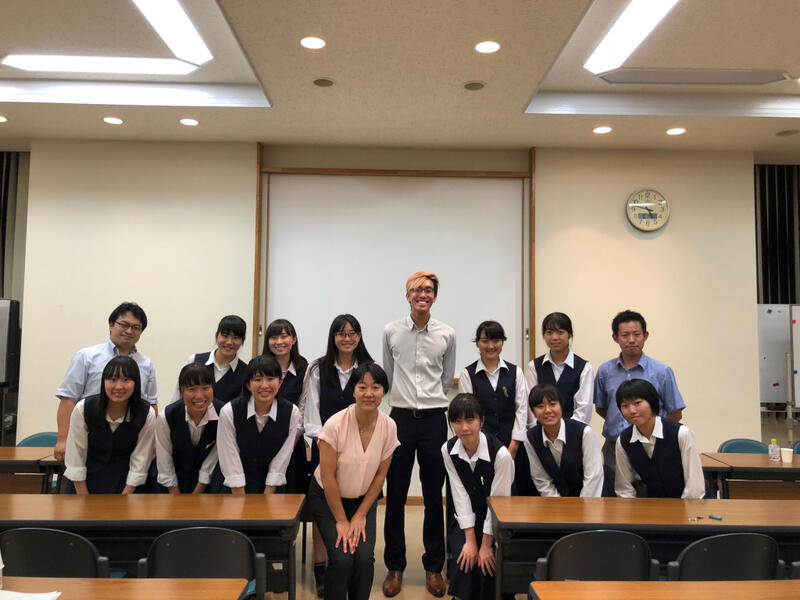
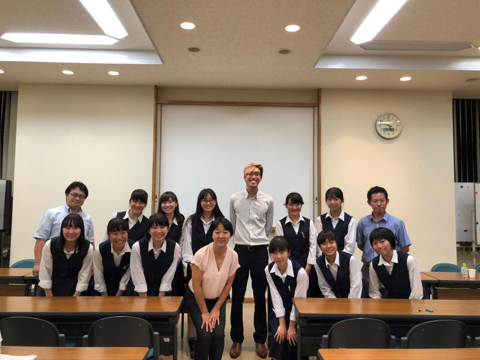
留学生の方にはシンガポールの3つのSpace (Urban Space, Cultural Space,Political Space)というタイトルで、シンガポールの多文化社会、政治、社会事情についてお話を伺いました。「シンガポールには文化背景が異なる人々がいるが、一緒に生活していくことで、距離が縮まっていく。」という日本とはかなり異なった、シンガポール社会についてのお話が印象的でした。
本校生徒はSGH課題研究を発表し、それに対しても質問やコメントをいただきました。留学生の方からは日本人とは異なった視点からコメントをいただき、大変有意義な事前指導になりました。大学の先生からは詳細なコメントをいただき、大変参考になりました。
シンガポールへの出発は来週１２日です。この事前指導を通じて、生徒達はシンガポールに行くのがさらに楽しみになったようです。
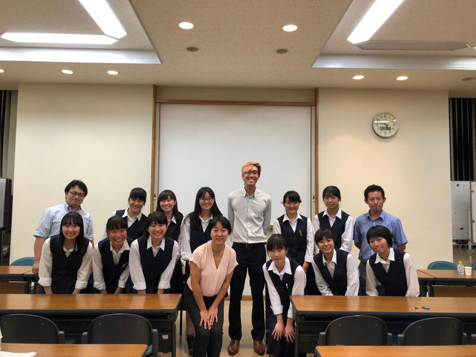 GL探究「１分間スピーチ」
平成30年9月4日（火）6，7限 第１学年普通科において、課題研究テーマを決めるための1分間スピーチ（個人発表）を行いました。千葉大学と東京大学の先生２名に御来校いただきテーマの決め方、研究の方向性や研究方法について助言をいただきました。今後は、テーマについて外国の事例を含めた先行事例やテーマを絞り込んで、研究グループを編成していきます。
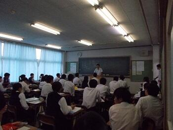
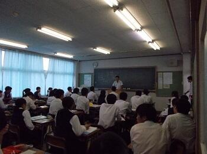
GLアクティブ「醸造文化・地域活性化を学ぼう」
平成３０年８月２２日（水）本校１・２年生１７名が、香取市佐原地区を訪問し、発酵醸造文化を基礎とした地域活性化について考えました。また、ハラール認証を受けた醤油のイスラム圏への輸出の可能性について考えてみました。

世界高校生水会議「Water is Life 2018」
平成３０年７月２４日（火）～２８日（土）渋谷教育学園渋谷中学高等学校及び渋谷教育学園幕張中学高等学校で行われた世界高校生水会議に本校２年生４名が参加しました。本校生徒は、講演やワークショップ、水に関する化学実験等に参加するとともに、世界１８か国（１０７名）の高校生及び本校以外の日本の高校生２８名と水に関するグローバルな課題について議論するなどの活動を行いました。全て英語でのやりとりでした。
３日目に行われたオーラルプレゼンテーション及びポスタープレゼンテーションでは、本校生徒は、「Team RISKIT」（高橋 玲、鹿嶋爽平、泉 恭太、佐々木いずみ）として、「Preserving the Native Eco-System of the Inba Swamp」というテーマで発表し、印旛沼でナガエツルノゲイトウという外来植物が繁殖し、水質汚染や生態系への悪影響のみならず農業や洪水排水作業に支障をきたしていることを課題として取り上げ、高校生ができる解決へ向けた取組について提案しました。その結果、Stewardship＆Polisy 部門で第３位でした。


３日目に行われたオーラルプレゼンテーション及びポスタープレゼンテーションでは、本校生徒は、「Team RISKIT」（高橋 玲、鹿嶋爽平、泉 恭太、佐々木いずみ）として、「Preserving the Native Eco-System of the Inba Swamp」というテーマで発表し、印旛沼でナガエツルノゲイトウという外来植物が繁殖し、水質汚染や生態系への悪影響のみならず農業や洪水排水作業に支障をきたしていることを課題として取り上げ、高校生ができる解決へ向けた取組について提案しました。その結果、Stewardship＆Polisy 部門で第３位でした。
ＧＬアクティブ「浅草・両国・築地・江戸博で調査」
平成３０年８月１０日（金）第１・２学年生徒４７名が、浅草、両国、築地に出向き、外国人観光客に課題研究に係ることについて英語でインタビューを行いました。その後江戸東京博物館に立ち寄り、日本の歴史について調べ、課題解決の材料を収集しました。


ＧＬアクティブ「高校生によるまちづくりワークショップ」
平成３０年８月１０日(金) ２年生７名が佐倉市役所において「佐倉市総合計画策定のための高校生によるまちづくりワークショップ」に参加しました。「今後の佐倉市のために市役所がすべきこと、市民ができること」というテーマのもと、市内の他の高等学校の生徒とともに付箋にアイデアを書き出し、それらを模造紙に貼り、考えをまとめました。この活動を通じて、生徒は佐倉市の状況を踏まえ、佐倉市をよりよくするための対策について考えることで、課題研究を深めることができました。


オーストラリア研修・課題研究発表
 平成３０年７月３１日（火）オーストラリア研修に参加している2年生２０名が、ナンボー・クリスチャンカレッジにおいて、１０年生約１００名に対し、課題研究の発表を行いました。「戦争を語り継ぐ」「ラッシュを解消しよう」「もったいない」「日本のゴミ問題」等のテーマでグループごとに発表を行いました。「日本のゴミ問題」については、現地校の生徒の反応がよく、質疑応答もたくさんありました。プレゼンテーションは全体的によくできていました。しかし、予期せぬ質問に対し英語で答えることが十分とは言えず、この機会を通して生徒が自分の課題を自身で捉えることができました。
平成３０年７月３１日（火）オーストラリア研修に参加している2年生２０名が、ナンボー・クリスチャンカレッジにおいて、１０年生約１００名に対し、課題研究の発表を行いました。「戦争を語り継ぐ」「ラッシュを解消しよう」「もったいない」「日本のゴミ問題」等のテーマでグループごとに発表を行いました。「日本のゴミ問題」については、現地校の生徒の反応がよく、質疑応答もたくさんありました。プレゼンテーションは全体的によくできていました。しかし、予期せぬ質問に対し英語で答えることが十分とは言えず、この機会を通して生徒が自分の課題を自身で捉えることができました。 GLアクティブ「ビジネスプラン研修」
平成３０年７月２０日（金） ２年F組３班の６名が日本政策金融公庫千葉支店において、伝統工芸品に係るビジネスプランを発表しました。コーディネータの先生方から御意見・御指導をいただき、研究内容について再考する部分があることや研究方法等を改善しなくてはならない点があることに気づきました。また、他校生徒のビジネスプランの発表も聞くことができ、課題研究の参考にすることができました。
課題研究「戦争を語り継ぐ」による小学校での特別講義
投稿日時 : 2018/07/12
 探究担当
探究担当
平成３０年7月11日（水）午後、2学年の課題研究「戦争を語り継ぐ」のグループが佐倉市立間野台小学校で小学6年生を対象に特別講義を行いました。
「日本はどのように戦争に参戦するようになったのか」
「当時の国民の暮らしはどのようなものだったのか」
「戦争体験者へのインタビュー調査の結果」
といったテーマで講演をしました。
戦争に関するクイズや当時の装備がどのくらいの重さだったのかを体験させた時には児童も熱心に話を聞いていました。この講義を通して児童の皆さんが戦争や平和について考えるきっかけになることを目指した取組です。
児童の皆さんにアンケート調査も行いました。間野台小学校の先生方、御協力ありがとうございました。
「日本はどのように戦争に参戦するようになったのか」
「当時の国民の暮らしはどのようなものだったのか」
「戦争体験者へのインタビュー調査の結果」
といったテーマで講演をしました。
戦争に関するクイズや当時の装備がどのくらいの重さだったのかを体験させた時には児童も熱心に話を聞いていました。この講義を通して児童の皆さんが戦争や平和について考えるきっかけになることを目指した取組です。
児童の皆さんにアンケート調査も行いました。間野台小学校の先生方、御協力ありがとうございました。
GL探究「研究を深めよう」
平成３０年７月１１日（水）第２学年普通科において、課題研究を深めるためのグループ協議を行いました。日本政策金融公庫の方２名に御来校いただき研究の方向性や研究方法について相談にのっていただきました。研究グループごとに御助言をいただき、テーマの絞り込みがもっと必要だと気づいたグループもありました。
７月９日(月)ＧＬ探究『課題研究について知る』
７月９日(月)午前１１時から１学年普通科生徒を対象にＧＬ探究『課題研究について知る』を実施しました。講師に日本政策金融公庫から寺田博史さんをお招きし、ビジネスプランについて説明していただきました。生徒は、ワークショップ等を通じて課題を見つける方法等、課題研究を進める上で必要なことを学びました。
シンガポール派遣事前学習
平成３０年６月１４日（木）、シンガポール海外研修に参加する生徒を対象にシンガポールの地誌についての特別授業が行われました。
内容は、東南アジアの中におけるシンガポールの位置づけやシンガポールの気候、政治制度についてです。1時間程度でしたが、モニターで写真や映像、地図を駆使した授業でシンガポールについての理解が深まりました。
 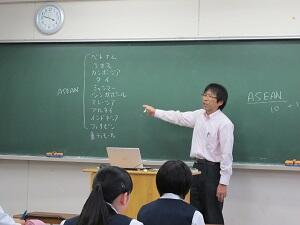
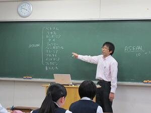
内容は、東南アジアの中におけるシンガポールの位置づけやシンガポールの気候、政治制度についてです。1時間程度でしたが、モニターで写真や映像、地図を駆使した授業でシンガポールについての理解が深まりました。
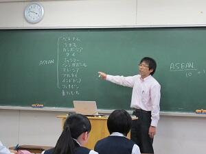 ドイツ･イギリス研修報告会（GL探究）
平成３０年５月８日（火）６限に、３月に行われたSGHドイツ･イギリス海外研修の報告会を行いました。
研修参加者が１・２年生を対象に研修の内容等について報告しました。ドイツ海外研修では実際に現地で実施したプレゼンテーションやフィールドワークについて報告し、イギリス海外研修ではフィールドワークやディスカッション等について報告しました。
いずれの研修でも、課題研究を深めたり、貴重な体験をしたりすることができたことが伝わりました。１年生は課題研究のテーマを考えることや海外に目を向ける意識を高めることができ、２年生は、課題研究を深めるためのヒントを得ることができたようです。
平成３０年５月８日（火）６限に、３月に行われたSGHドイツ･イギリス海外研修の報告会を行いました。
研修参加者が１・２年生を対象に研修の内容等について報告しました。ドイツ海外研修では実際に現地で実施したプレゼンテーションやフィールドワークについて報告し、イギリス海外研修ではフィールドワークやディスカッション等について報告しました。
いずれの研修でも、課題研究を深めたり、貴重な体験をしたりすることができたことが伝わりました。１年生は課題研究のテーマを考えることや海外に目を向ける意識を高めることができ、２年生は、課題研究を深めるためのヒントを得ることができたようです。


 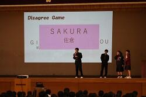
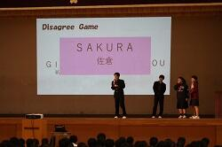
研修参加者が１・２年生を対象に研修の内容等について報告しました。ドイツ海外研修では実際に現地で実施したプレゼンテーションやフィールドワークについて報告し、イギリス海外研修ではフィールドワークやディスカッション等について報告しました。
いずれの研修でも、課題研究を深めたり、貴重な体験をしたりすることができたことが伝わりました。１年生は課題研究のテーマを考えることや海外に目を向ける意識を高めることができ、２年生は、課題研究を深めるためのヒントを得ることができたようです。
平成３０年５月８日（火）６限に、３月に行われたSGHドイツ･イギリス海外研修の報告会を行いました。
研修参加者が１・２年生を対象に研修の内容等について報告しました。ドイツ海外研修では実際に現地で実施したプレゼンテーションやフィールドワークについて報告し、イギリス海外研修ではフィールドワークやディスカッション等について報告しました。
いずれの研修でも、課題研究を深めたり、貴重な体験をしたりすることができたことが伝わりました。１年生は課題研究のテーマを考えることや海外に目を向ける意識を高めることができ、２年生は、課題研究を深めるためのヒントを得ることができたようです。
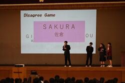 ドラードカレッジ来校
昨年度のオランダ研修でお世話になったドラード・カレッジの学生が佐倉高校を訪問しました。
英語の授業では生徒と交流をし、午後は書道の体験も行いました。
書道体験ではなれない毛筆に苦戦しながらも見事な作品を作り上げていました。
放課後は地域交流施設で本校生徒の案内のもと、展示室を見学しました。
 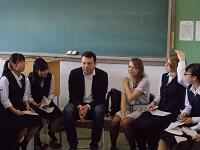
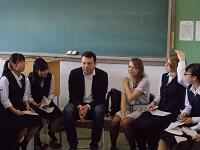


英語の授業では生徒と交流をし、午後は書道の体験も行いました。
書道体験ではなれない毛筆に苦戦しながらも見事な作品を作り上げていました。
放課後は地域交流施設で本校生徒の案内のもと、展示室を見学しました。
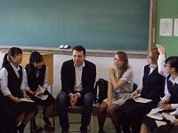 新学年SGH説明会
2学年は4月10日、1学年は4月11日に今年度のSGHについて説明会を行いました。
各学年の内容は次のとおりです。
＜2学年＞
研究テーマの精選方法、レポート作成とプレゼンテーションを行うまでの過程についての説明、ALTの助言、今年度のゴールのイメージ構築（他校の優れたプレゼンテーションの様子を映した動画を見る等）
＜1学年＞
課題研究の概要説明、「Think Grobally, Act Locally」（地球規模で考え、地域で動く）をキーワードとし、世界規模の課題を足元から見つめ直してその解決策を提案できるよう、研究・調査を行うこと、グループで研究すること、学年のゴールは研究テーマについて英語でプレゼンテーションができるようになること等について説明
各学年の内容は次のとおりです。
＜2学年＞
研究テーマの精選方法、レポート作成とプレゼンテーションを行うまでの過程についての説明、ALTの助言、今年度のゴールのイメージ構築（他校の優れたプレゼンテーションの様子を映した動画を見る等）
＜1学年＞
課題研究の概要説明、「Think Grobally, Act Locally」（地球規模で考え、地域で動く）をキーワードとし、世界規模の課題を足元から見つめ直してその解決策を提案できるよう、研究・調査を行うこと、グループで研究すること、学年のゴールは研究テーマについて英語でプレゼンテーションができるようになること等について説明
SGH甲子園 最優秀賞受賞
３月２４日（土）に関西学院大学上ヶ原キャンパスで行われた全国スーパーグローバルハイスクール課題研究発表会（SGH甲子園２０１８）において、本校から出場した中園侑奈さん、滝田紗恵さん、保谷恵都さん、木村仁美さんのグループが、研究成果ポスタープレゼンテーション（英語）部門最優秀賞（１校のみ）を受賞しました。
２月６日（火）「ＳＧＨ 互いのプランを深め合う発表会」
２月６日の５、６、７限に、普通科１、２年生を対象にSGH課題研究の校内発表会を行いました。班別のSGH課題研究について発表し、留学生との交流を通して、お互いの研究を深め合いました。１年生は具体的にどのような提言・発信や行動ができるのかディスカッションを行い、２年生はこれまで取り組んできた研究成果を報告しました。
３月１９日にはSSHと合同で課題研究発表会を行います。
３月１９日にはSSHと合同で課題研究発表会を行います。
１月２０日(土)『外国人おもてなし語学ボランティア育成講座』
１月２０日(土)成田国際高校で行われた、『外国人おもてなし語学ボランティア育成講座』(千葉県主催)に１年生１４名が参加しました。生徒は、ケーススタディを通して、コミュニケーション力、知識や情報を駆使して問題解決する方法、ボランティア・スピリッツについて学ぶことができました。
第２回関東・甲信越静地区SGH課題研究発表会
平成２９年１２月２３日（土）、立教大学において実施された第２回関東・甲信越静地区スーパーグローバルハイスクール課題研究発表会に参加しました。本校からは、プレゼンテーション「Reducing Food Loss By Reviving "Doggy Bag"」（言語：英語）「Learn From Youkai」（言語：英語）「餃子で築く日中の友好関係」（言語：日本語）及びポスターセッション「救え！見捨てられた動物たち ～殺処分のない社会を求めて～」（言語：英語）「ムスリムに日本のラーメンを広めよう」（言語：日本語）の５チームが発表しました。発表後の質問や指摘に多くの気づきがあり、他校の発表に学ぶところもたくさんありました。
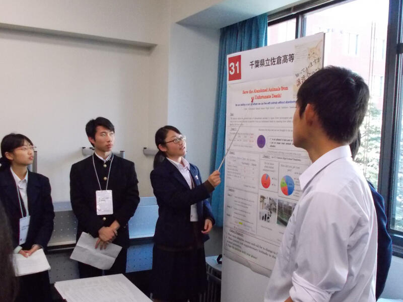
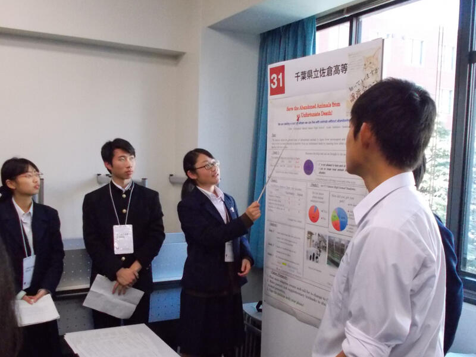
ビジネスプランについて
日本政策金融公庫が主催する第５回「創造力、無限大∞ 高校生ビジネスプラン・グランプリ」への応募は、エントリー高校数が３８５校(前回比１１８．８％)、エントリー件数が３，２４７件(同１２２．０％)といずれも過去最多となりました。３，２４７件の中から本校「ドギーバッグ復活計画」がBEST１００に選出されました。
SGH全国高校生フォーラム
１１月２５日にパシフィコ横浜で行われたＳＧＨ全国高校生フォーラムに出展したポスターを掲示します。
SGH「課題研究における調査分析方法～RESASを使って～」講演
１１月２１日（火）、本校１学年生徒を対象にRESASを使った調査分析方法に関する研修会を行いました。講師としてクラブワールドピースジャパン理事長の富樫泰良さんをお招きし、RESASの活用方法や統計資料から地域課題を見つけていく方法、着眼点についてお話を伺いました。
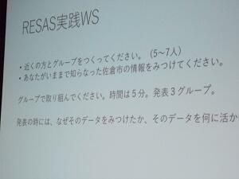
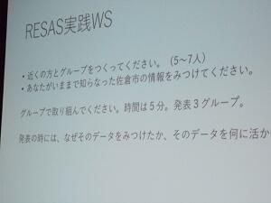
SGH海外研修（オランダ派遣）経過報告3
11月13日(日本時間11月13日から14日にかけて)、ドラードカレッジでのプログラムが始まりました。初日は、国際青少年会議に参加している高校生が参加国別にプレゼンテーションを行いました。本校生徒５名もしっかりと行えました。その後、異文化理解に関する講演やワークショップが行われました。

SGH海外研修（オランダ派遣）経過報告２
11月11日（日本時間11日から12日にかけて）、アムステルダムにて国立ミュージアム、アンネフランクの家等を訪ねました。その後、ホームステイ先に移動しました。
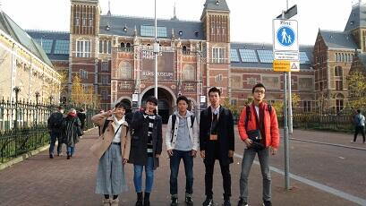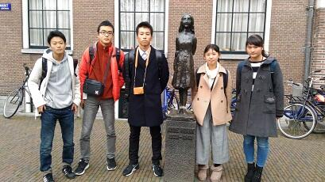
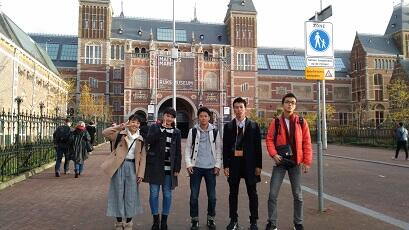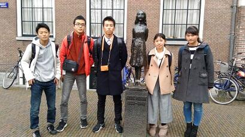
SGH海外研修（オランダ派遣）経過報告1
11月10日（日本時間では10日から11日にかけて）、シーボルト博物館、ライデン大学、国立民族学博物館を訪問し、見学や意見交換等を行いました。 その後、一行は予定どおりアムステルダムのホテルに到着しました。
 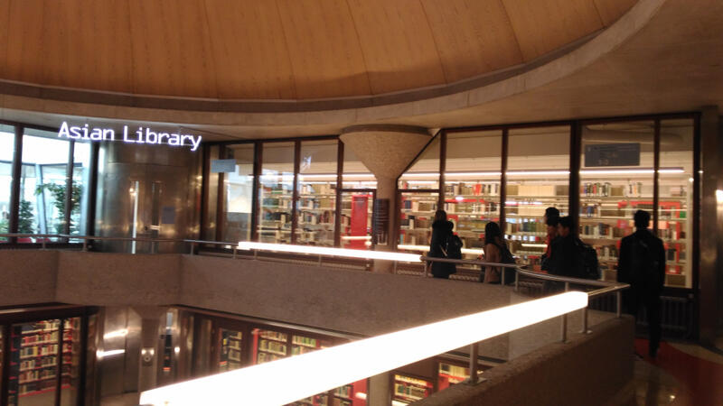
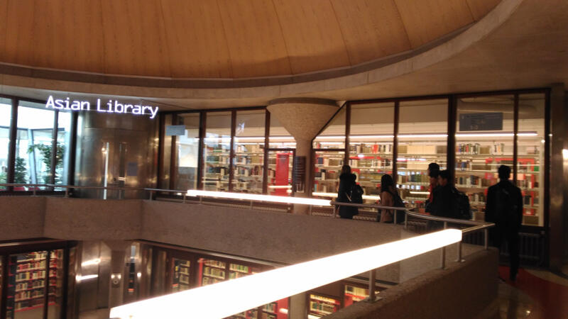
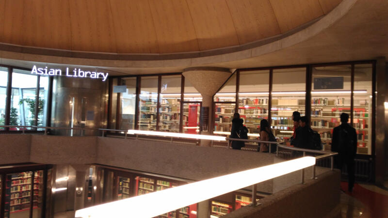 １０月１０日（火）SGH海外研修報告会・SSHポスター発表会
１０月１０日（火）６・７限に本校体育館において、普通科２年生によるSGH海外研修（シンガポール）及びＳＧＨオーストラリア短期研修の報告会、理数科２年生によるＳＳＨポスター発表会を行いました。１年生は、研究の道筋や発表方法などを学ぶとともに、自分たちの課題研究で取り上げたテーマを深め、より具体的なテーマへと絞り込む必要性を感じていました。
１０月３日（火）GLアクティブ『筑波大学SGH研修』
筑波大学でのSGH研修では、アラブ革命後の中東・北アフリカ問題の見方についての模擬授業後、学内の図書館を見学しました。模擬授業では、アラブ革命の発生要因を社会的、経済的背景から考えることにより物事を様々な側面から捉え、因果関係を読み解く大切さを学ぶことができました。
１０月３日（火）GLアクティブ『東京外国語大学SGH研修』
ＧＬアクティブ「東京外国語大学ＳＧＨ研修」として、東京外国語大学府中キャンパスにて研修を行いました。多文化共生等のグローバルな課題に関連する分野を研究している研究室の見学や、模擬授業『危機言語(消滅の危機に瀕する言語)』を通して、SGH課題研究の一助としました。
SGH海外研修（シンガポール）
９月１３日(水)から１６日(土)まで１７名の生徒がSGH海外研修としてシンガポールで研修を行いました。SJIとの交流、味わった食事、目にした建造物、出会った人、訪問した企業等を通して多文化共生社会を実感することができました。また、SJI生との交流を通じて、生徒たちが現在取り組んでいる課題研究についても深めることができました。

９月６日（火）GL探究『課題研究グループを作る』
９月６日（火）６～７限を使い１年生普通科では、夏休みに参加したGLアクティブなどを参考に自身の興味がある分野について１分間スピーチを行いました。そして、スピーチを基に今後行っていく課題研究のグループを作りました。
８月２６日(土)GLアクティブ『江戸博を知ろう』
江戸東京博物館と連携した活動を行いました。館内の見学や質疑応答を通して、グローバル化が進む現代社会の問題(例えば循環型社会の構築)と江戸時代の社会問題解決方法などを比較し、課題研究のテーマを見つける一助となりました。
８月２４日（木）GLアクティブ『難民問題を考える』
認定NPO法人「難民を助ける会」、「さぽうと２１」より、講師の先生をお招きし、国外・国内の難民支援活動の現状について説明、助言を受けました。その後、課題研究に関する質疑応答が行われ、研究を深める一助となった。
８月２３日（水）GLアクティブ『歴博を知ろう』
日本の１９世紀後半から１９２０年代までの展示を国立歴史民俗博物館、樋浦郷子先生より解説していただき、日本の近代史を学びました。先生から展示を見る様々なポイントを教えていただき、海外からの視点や歴史と災害の関係も踏まえ生徒にわかりやすく解説していただきました。
８月４日（金）GLアクティブ『千葉大学環境ISO学生委員会に行こう』
環境マネジメントシステムに主体的に取り組んでいる千葉大学環境ISO学生委員会と連携した課外授業を千葉大学西千葉キャンパスで行いました。大学生が実際に取り組んでいる活動について知るとともに、高校生が身近にできる環境問題解決に向けた取り組みについて考察を行いました。

８月３日（木）GLアクティブ『醸造文化、地域活性化を学ぼう』
醤油醸造工場並びに発酵食品の展示を見学し、日本における醸造・発酵文化を通じた地域活性化についての考察を行いました。また、ハラール認証を取得し、イスラム圏に輸出している醤油を通じて日本の食品の可能性についても考え、課題研究への一助としました。

８月２日（水）GLアクティブ『東京ジャーミィ』
東京ジャーミイ広報担当の下山 茂 氏による、イスラームの考え方、日本とトルコの交流の歴史等に関する講義の後、モスク、礼拝堂を見学しました。イスラム寺院を訪れ、イスラム文化に直接触れることにより､多文化共生社会構築を考える機会となりました。また、「GL世界史」で学習した内容と関係づけたり、日本の歴史・伝統・文化と比較したりしながら考えを深めることができました。
８月１日（火）GLアクティブ『歴博＋千葉大 留学生プロジェクト見学』
千葉大学で学ぶ中国からの留学生が、「ここを見ると日本の歴史や文化が理解しやすい」「ここが面白い」と考えた内容を、母国語と日本語で作成したワークシートを通じて発表し、生徒と意見交換を行いました。生徒は日本を捉える上で新しい視点を発見することができ、自国についての知識をもっと蓄える必要を感じたようです。
７月２９日(土) GLアクティブ『歴史に学ぶ「戦争の気配」の感じ方』
東京大学加藤陽子教授による『過去の戦争における、国民の立ち位置を図るのは可能なのか』『「知られてなかったから」選択を誤ったといえるのか』をテーマとした講義を拝聴後、太平洋戦争に関する佐倉市展示資料も積極的に見学しました。
また、講演の中で、加藤先生は「歴史家は、政府と国民の間にいる人物から研究する」「国民の反応を知るため、為政者の側、政策立案者の側を見ていく方法あり」とおっしゃっており、生徒にとって課題研究の参考になりました。
また、講演の中で、加藤先生は「歴史家は、政府と国民の間にいる人物から研究する」「国民の反応を知るため、為政者の側、政策立案者の側を見ていく方法あり」とおっしゃっており、生徒にとって課題研究の参考になりました。
7月27日（木）GLアクティブ『難民問題を考える —東京入国管理局見学』
平成２９年７月２７日（木）、普通科１年生４９名と２年生４名が東京入国管理局本局（品川）及び 羽田支局のおかれている羽田空港施設を見学し、日本における難民申請の実情や入国管理についてお話を伺いました。人々の安全を考え、人権に配慮し、公正に管理することの重要性や日本の難民認定の問題点について捉えることができました。また、様々な視点から資料を比較し客観的に捉える必要性なども学ぶことができ有意義な見学になりました。
７月１８日（火）、２４日（月）GLアクティブ『ビジネスプラン発表会』
７月１８日（火）に日本政策金融公庫の職員の方をお招きし、現在生徒が取り組んでいるビジネスプランへのアドバイスをいただきました。
また、２４日（月）には、千葉センシティタワーにある日本政策金融公庫千葉支店で行われた「ビジネスプラン発表会」に参加しました。生徒は、ビジネス課題に取り組まれているコーディネーターの方からアドバイスをいただき、課題研究を深めることができました。